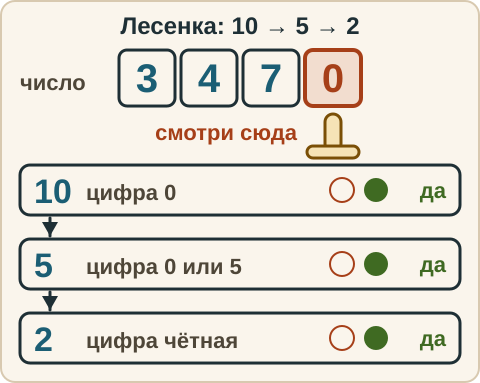
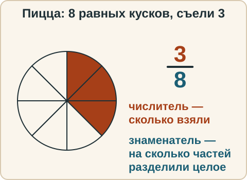
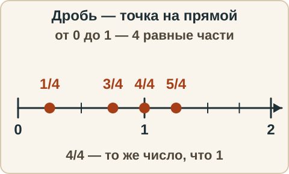
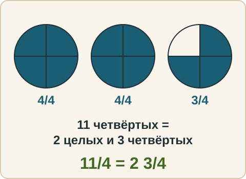
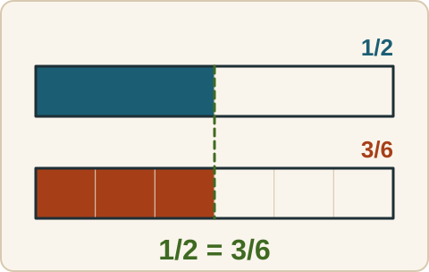
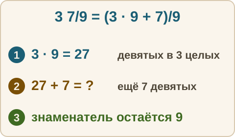

Математика: база · занятие 4Что такое дробь
Цель: ты объясняешь словами, что значат числитель и знаменатель, ставишь дробь на числовую прямую, отличаешь правильную дробь от неправильной, переводишь неправильную дробь в смешанное число и обратно, сокращаешь дробь, по последней цифре проверяешь, делится ли число на 2, 5 и 10. Ответы и подсказки спрятаны: сначала реши сам, потом нажми кнопку.
Как записывать ответ. Число — целое число. Дробь — через черту и сокращённая до конца, например 3/4. Смешанное число — целая часть, пробел, дробь, например 2 3/4. Ответ «да» или «нет» — словом. На что делится — числа через запятую, например 2, 5, или слова «ни на что».
Вспомнить
Без подсказок, сразу проверка. Отмечай, на чём споткнулся, — в журнал.
- 6 · 8
- 54 : 9
- −7 + 3
- 5 − 11
- 3 + 4 · 5
- 23 · 12
- Делится ли 1250 на 5?
- Делится ли 347 на 2?
Вопросы 7 и 8 — про делимость, подсказок нет. Ответь и скажи вслух своими словами, почему так.
Беглость: таблица, общий делитель и признаки
Три игры. Ошибся — пример вернётся: попробуй ещё раз. Без таймера.
Игра 1. «Стрелка» по таблице.
- 6 · 7
- 8 · 9
- 7 · 8
- 54 : 6
- 63 : 9
- 48 : 8
Игра 2. «Общий делитель». Назови наибольшее число, на которое делятся оба числа. Это заготовка для сокращения дробей.
- Наибольшее число, на которое делятся оба: 6 и 9
- Наибольшее число, на которое делятся оба: 8 и 12
- Наибольшее число, на которое делятся оба: 10 и 15
- Наибольшее число, на которое делятся оба: 12 и 18
Игра 3. «Лесенка 10 → 5 → 2». Это признаки делимости. Прочитай правило и перескажи его своими словами.
Признаки делимости по последней цифре. Смотрим только на последнюю цифру. На 10 делится число, оканчивающееся на 0. На 5 — на 0 или 5. На 2 — на чётную цифру (0, 2, 4, 6, 8). Идём по ступенькам сверху вниз: сначала 10, потом 5, потом 2.
- 3470 делится на 10 (оканчивается на 0), а значит и на 5, и на 2.
- 2385 делится на 5, но 2385 не делится на 2 (последняя цифра 5 нечётная).
- 1276 делится на 2, но 1276 не делится на 5.

Зачем. Признак подсказывает действие. Сократи 35/80: 35 делится на 5 (оканчивается на 5), 80 делится на 5 (оканчивается на 0). Делим числитель и знаменатель на 5: 35/80 = 7/16.
Ловушка. Смотрим на последнюю цифру, не на первую: 52 начинается с 5, но 52 не делится на 5 (оканчивается на 2). Число 0 делится на 2, на 5 и на 10 (0 : 5 = 0).
Для каждого числа назови, на какие из чисел 2, 5, 10 оно делится, или напиши «ни на что».
- На что делится — на 2, 5 или 10: 48
- На что делится — на 2, 5 или 10: 75
- На что делится — на 2, 5 или 10: 130
- На что делится — на 2, 5 или 10: 391
- На что делится — на 2, 5 или 10: 2764
- На что делится — на 2, 5 или 10: 1205
Правило
Дробь записывают так: a/b. Здесь b — знаменатель: на сколько равных частей разделили целое. a — числитель: сколько таких частей взяли. Черта между ними — знак деления.
Область применимости. Части обязаны быть равными. Три куска пиццы разной величины «тремя восьмыми» не назовёшь.
Из жизни. Пиццу разрезали на 8 равных кусков, съели 3. Съели 3/8 пиццы.

Дробь на числовой прямой. Отрезок от 0 до 1 делим на b равных частей (b — знаменатель). Точка a/b — это a-я отметка от нуля (a — числитель). Дробь — точное число, у него есть своё место на прямой, как у целых.

Правильная дробь — числитель меньше знаменателя (5/8): дробь меньше 1, это часть одного целого. Неправильная дробь — числитель больше знаменателя или равен ему (8/5, 8/8): дробь не меньше 1. Слово «неправильная» не значит «ошибочная». Это просто название.
Смешанное число — целая часть и дробная вместе: 2 3/4 — это 2 + 3/4 (два целых и три четвёртых). Знак «+» не пишут, но он есть.
Как переводить.
- Неправильная → смешанное: делим числитель на знаменатель с остатком. Частное — целая часть, остаток — числитель дробной части, знаменатель тот же. 11/4: 11 : 4 = 2 (ост. 3), значит 11/4 = 2 3/4.
- Смешанное → неправильная: целую часть умножаем на знаменатель и прибавляем числитель. 2 3/4 = (2 · 4 + 3)/4 = 11/4.

Основное свойство дроби. Если числитель и знаменатель умножить на одно и то же число (не ноль) или разделить на одно и то же число, значение дроби не изменится: a/b = (a · k)/(b · k). Здесь a — числитель, b — знаменатель, k — любое число, кроме нуля, на которое мы умножаем и числитель, и знаменатель.
Сократить дробь — разделить числитель и знаменатель на их общий делитель (число, на которое делятся оба). Дробь несократимая, когда общих делителей, кроме 1, нет. Сокращаем до конца: на наибольший общий делитель, либо несколько раз подряд.

Разобранный пример
А. Запиши 17/5 смешанным числом.
- 17 : 5 = 3, остаток 2 (3 · 5 = 15, 17 − 15 = 2).
- Ответ: 3 2/5.
- Проверка: 3 · 5 + 2 = 17. Верно.
Б. Сократи 18/24.
- Общий делитель: 6 (18 : 6 = 3, 24 : 6 = 4).
- 18/24 = 3/4. Больше общих делителей нет: у 3 и 4 нет общих делителей, кроме 1.
- Ответ: 3/4.
С подсказкой
Решай сам. Подсказку открывай, только если застрял.
- Запиши 3 7/9 неправильной дробью.
- Сократи 36/48.

Сам
Сначала сделай первый шаг сам. Два раза не сошлось — появится кнопка «Показать решение».
- Круг разделён на 12 равных долей, закрашено 5. Какая дробь закрашена?
- Запиши 23/6 смешанным числом.
- Запиши 4 2/5 неправильной дробью.
- Сократи 28/42.
- Какая из дробей правильная: 7/9, 9/7, 9/9?
- Равны ли 15/20 и 3/4? Объясни, что делали с числителем и знаменателем.
Ловушка
Ловушка. Смешанное число 2 3/4 переводят в неправильную дробь, «приписывая» цифры: 23/4. Это ошибка. Проверка прикидкой: 2 3/4 чуть меньше 3, а 23/4 — это 23 : 4 = 5 с остатком 3, то есть 5 3/4. Правильно: (2 · 4 + 3)/4 = 11/4. Проверь себя: целую часть умножил на знаменатель и прибавил числитель?
Смесь
Вперемешку: дроби, порядок действий, знаки, деление. Форму ответа подсказывает серый образец в поле.
- Круг разделён на 9 равных долей, закрашено 4. Какая дробь закрашена?
- 17/3 — запиши смешанным числом.
- 3 1/2 — запиши неправильной дробью.
- Сократи 24/36.
- 72 : 8
- 20 − 4 · 3
- (−2) · (−7)
- Сократи 45/60.
- Сколько целых в 29/7?
- Равны ли 6/8 и 9/12?
- Делится ли 2605 на 2?
- Сократи 45/70.
Журнал
Запиши 1–3 строки: «что перепутал → как проверить». Пример формы: «числитель и знаменатель перепутал местами → знаменатель — на сколько частей разделили, числитель — сколько взяли».
- …
Карточка признаков. Составь её сам, не списывая: для каждого делителя запиши признак одной фразой своими словами и два своих примера — «да» и «нет». Примеры бери свои, не из занятия. Над карточкой нарисуй от руки лесенку 10 → 5 → 2. Карточка остаётся у тебя: на занятиях 5 и 6 в неё добавятся новые строки, и каждое занятие ты будешь сверять её со «Вспомнить».
Поля для твоей записи. Они нигде не сохраняются и никуда не отправляются: закроешь или обновишь страницу — запись пропадёт. Поэтому потом перепиши карточку от руки.